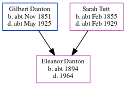

Eleanor Johnson Danton c1894 - 1964
[ Home ] | [ Calendar ] | [ Surnames Index ] | [ Errors ] | [ Family History ]The child of Gilbert Danton (a gas stoker) and Sarah Tutt, Eleanor Danton, the first cousin twice-removed on the father's side of Nigel Horne, was born in Stratford, London, England c. 18941,2. On 31 Mar 1901, she was living at 83 Abbey Lane, West Ham, London, England3.
She died in 1964 in West Ham, Essex, England.
Parents
- Gilbert Johnson was born c. Nov 1851
- Sarah Maria was born c. Feb 1855
Citations
- 1901 England Census Online publication - Provo, UT, USA: The Generations Network, Inc., 2005.Original data - Census Returns of England and Wales, 1901. Kew, Surrey, England: The National Archives of the UK (TNA): Public Record Office (PRO), 1901. Data imaged from the National
- England & Wales, FreeBMD Birth Index, 1837-1915 Online publication - Provo, UT, USA: The Generations Network, Inc., 2006.Original data - General Register Office. England and Wales Civil Registration Indexes. London, England: General Register Office. © Crown copyright. Published by permission of the Cont
- 1901 England, Wales & Scotland Census - Findmypast (was age 7 and the daughter of the head of the household)
Media
1901 England, Wales & Scotland Census - GBC/1901/0010861318
Family Tree
Map
Generated by ged2site. Last updated on Jul 3, 2024
Known Issues
Death date (1964) has no citations
1939 UK register information missing